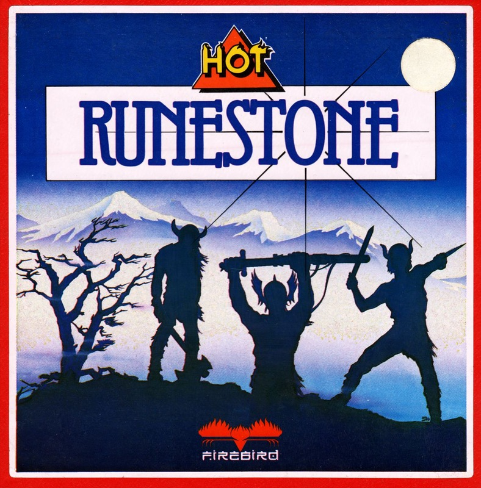
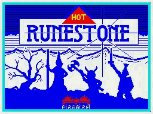
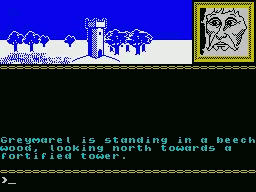
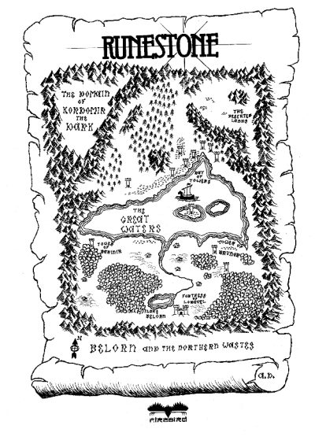

Runestone


{kind=link}

| Publisher: | Games Workshop |
| Price: | £7.95 |
| Year: | 1986 |
| Source: | CRASH, Issue 17 |

Runestone was written by Alan Davis and I can’t help wondering if it’s the same name behind The Journey reviewed here in February. Comparisons between Runestone and Lords of Midnight are inevitable, but just as BBC2 quietly serves up the radical fare while Channel 4 is busy dodging the press flak, so this game stealthily steals up on the heels of Midnight to provide a really good jaunt for your money. This game impresses by expanding on some of the ideas seen in Midnight (in particular the landscaping of the Beyond epics) and blending them with the very best features of mainstream adventuring.
These features are significantly distinctive and their overall effect sufficiently far-reaching to distance Runestone from Midnight. Runestone is original enough to stand on its own merits and its flavour has the essence of Games Workshop, being well-designed and polished to a fine finish.

A game can be a good one whether it be played on a computer, on a playing board, or if scrawled out in the desert sand, and it is Games Workshop’s experience in all modes of playing games which makes them adept at spotting and nurturing those ingredients they consider vital to computer games. A thesis might be devoted to what makes a good game but all the facts would point to one overall consideration — does the game work? Well, in this case, the answer is yes it does.
The buzz word in Lords of Midnight was landscaping and, not to be outdone, Runestone presents venturescope which combines real-time action, a full text interpreter, multiple command input, dozens of independent characters and 8,000 views from over 2,000 locations. You control three heroes in their main quest to crush Kordomir the Dark One, hopefully retrieving the long lost Runestone of Zaphir in the process. But in this we meet one of the many strengths of the game, namely its flexibility, and the truth is you can do whatsoever you like in the Lands of Belorn and the Northern Wastes. You can, and on your first journey no doubt will, spend much of your time exploring the countryside or meeting the various creatures who roam the lands. Or if in a vindictive mood, how about leaving all the quests to heroes and spend some time tracking and slaying every orc that ever walked the lands (but be warned, some orcs are as solid as animated tree trunks and will leave you a tired and hopeless prisoner).

I was trying to get through the rest of this review without mentioning that game again but, as in this instance, an analogy is worth a paragraph it is best to say that this adventure really is similar to Lords of Midnight in presentation. If the pictures appear simpler then this should not be taken as a bad point as they are very pleasing in design and those depicting your voyages in the dragonships around the lakes and waterways are truly exceptional. The price you pay for such inspired ingenuity is the loss of the diagonal directions NE, SW etc, but the sense of fun you gain cruising around the waterways is well worth the minimal loss in manoeuvrability. Other departures from Midnight are the full sentence input (as opposed to the overlay option scheme) and the ability not only to approach fortified towers, pavilions and cave-dwellings, but to actually enter and see inside them too.
The comprehensive, full sentence analysis more nearly resembles that of a mainstream adventure so you can pick up swords, open chests and talk to other characters. These features along with the tremendous freedom to wander at will, reminds me of Bug Byte’s Twin Kingdom Valley and perhaps it might be better to think of this game as bringing together some of the best features of both Lords of Midnight and the likes of The Hobbit.
It wouldn’t be a Games Workshop adventure without some huge plot and intrigue but as usual it falls on the tasteful side of self-indulgence, and, given the nature of the game, contains clues to the whys and wherefores which dictate your fate. So, here are the salient points of the plot...
Long ago, before the coming of the Dark One named Kordomir, the land of Belorn flourished. They were proud but simple folk content to pass their peaceful lives beyond the great mountains. This was in the great age of the wizards who dealt in the mysteries beyond the ken of common man, and the elves, who wandered deep into the forests. To the north lay the inhospitable wastes where few Belorn folk ever cared to venture, so none suspected the great threat imposed by the orcs, trolls and demonic characters from that distant quarter.
When the fleets of dragon ships descended upon the gentlefolk to the south the lands were overrun. Wizards were slain, the elves moved on, and ancient treasures were carried off north by the orcs. Over the generations, the raids continued and the populations of Belorn dwindled. The ultimate victory of Kordomir seemed inevitable. Yet from this state of despair began the epic quest of Greymarel, Morval and Eliador who, with a fearlessness celebrated in countless ballads and tales, struck north into the wastes in a final attempt to destroy the Dark One.
A map is provided in the booklet but in the best Tolkien tradition it is schematic (having been constructed from memory and folklore) leaving the detailed discovery of the terrain to the explorer, although the positions of the marked towers and huts are very much as you find them.
Playing the game seems very familiar, with you having control over Morval the Warrior, Eliador the Elf and Greymarel the Wizard. These controllable characters meet and sometimes enlist the support of others such as Brunor the Bold. A character who first attaches himself to Greymarel, and then later becomes a pain in the neck, is Skirmal the Sly, who seems to possess any item just when you are about to make some use of it. Not learning quickly how to deal with the threat this character imposes could leave you laughing at your own predicament as the silliest of orcs proceeds to run rings round you.
If you are not blowing your chances you should have a sword in the hand of Morval and a staff among the possessions of Greymarel the Wizard not so long after the off. I could tell you from where the characters start off but that would spoil the fun of seeing the map before you come to life. What can be said is you’ll have to cross the Great Waters which divide the friendly south from the forbidding north sooner or later, and it is here you meet the dragonships. One particularly novel feature concerning the ships is the ability to sail them around with one character on the ship and to view them from the shore through the eyes of another. In this way you can actually influence the views through the actions of the characters — super stuff.
There is no doubting the first assailants to be met from the evil forces from the north. The orcs are brutish bullies who bring off quick raids on the south, then dart back to the safety of a fortified tower in the north. Working out how best to deal with this early threat will be your first major tactical problem. Trying to fathom which character is useful in any given situation will provide many more. Avoiding the orcs may seem the best policy, but in so doing you forfeit the chance of finding rich treasure chests and objects of great veneration.

You may find the constant ‘Time Passes’ which greets any pause in the action an annoyance at first but after just one game you will begin to realise the significance of this — every beat of the clock brings the marauding orcs closer, so much so, that when you return to continue with a character you may well find him ensconced within an orc-infested tower. Getting out of a well-guarded tower is anything but easy. Weapons are important (as is the hauberk, a long coat of mail) and the LIST command, which lists the possessions of the three main characters, is very useful.
In battle, using the ‘repeat last command’ key (CAPS SHIFT and 2) can keep up the pressure on a flagging orc. (Incidentally, this command comes up with a 2 when you ask it to repeat something nonsensical.)
Before summing up let me just say that there were one or two features which left me puzzled — like why defeated creatures disappeared along with their armoury, and, just how should you go about trying to get some weapon out of the grasp of an imbecile and into more skilled hands? All in all, most conceivable areas for criticism have been predicted, worked upon and ironed out. I suppose these criticisms are similar to those levelled at The Hobbit — wooden characters with an infuriating lack of control over them — but in this respect perhaps perfection lies some distance beyond 48K.
Runestone is a significant addition to the games playing world. Its strength is its painstaking attention to detail which makes play so smooth and enjoyable. The scale, feel and difficulty of the adventure are pitched just right, always fascinating, always fun. Games Workshop are the masters of games design to the extent that you certainly don’t feel you are the first person to have played the game — and with games as good as this you certainly won’t be the last. Have fun.
COMMENTS
| Difficulty: | Easy to play, but not so easy to complete |
| Graphics: | Good perspective of view in direction you are looking |
| Input facility: | Allows full sentences and speech |
| Response: | About 4–5 seconds |
| Special features: | 2,000 locations; perspective graphics; interactive characters |
| General Rating: | Excellent value. |
| Atmosphere: | 9/10 |
| Vocabulary: | 7/10 |
| Logic: | 8/10 |
| Addictive Quality: | 9/10 |
| Overall Value: | 9/10 |